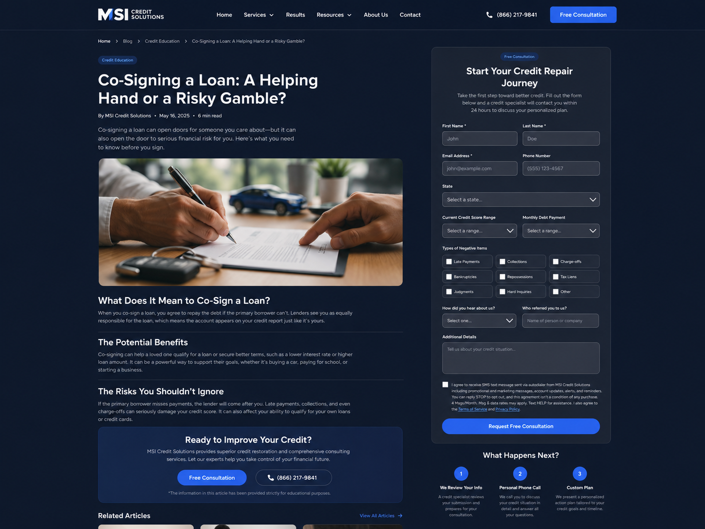
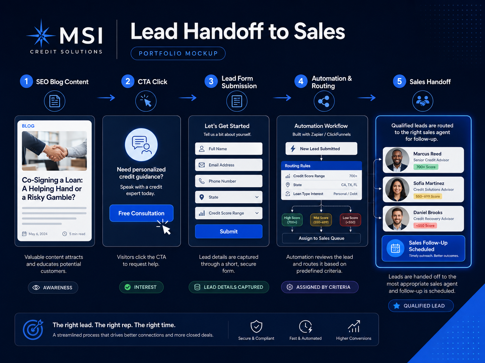
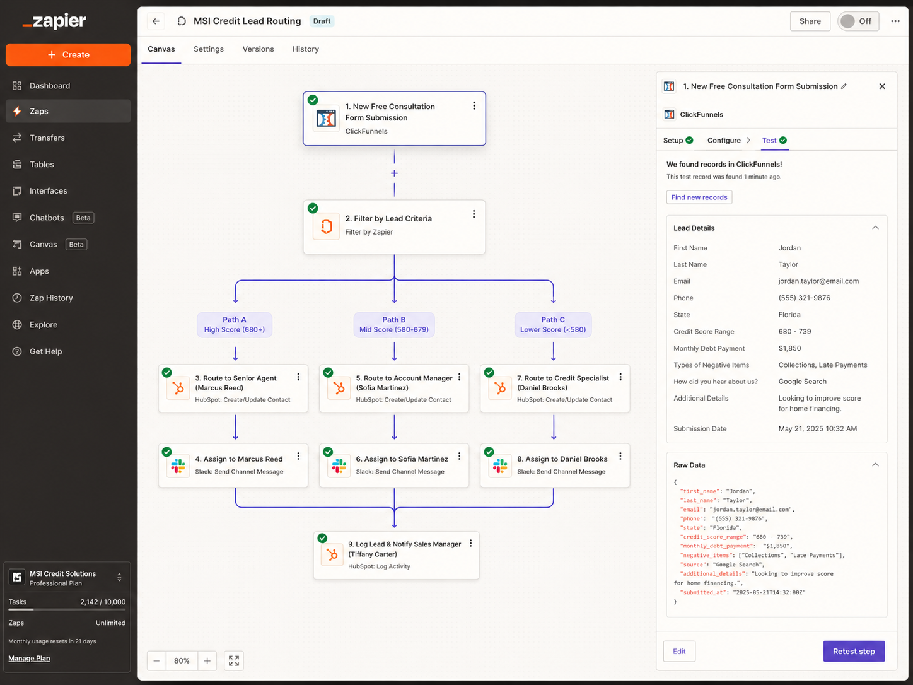

CASE STUDY / 03
SEO Blog &
Lead Generation Funnel
Educational blog content and lead-generation funnel support for MSI Credit Solutions, created to attract potential customers, explain credit-related topics, and move qualified prospects toward the sales team.
Business goal
Increase website traffic, capture leads, and create a smoother path from educational content to sales follow-up.
Content focus
Credit education content that helped prospects understand common financial topics and take the next step toward personalized support.
Tools & channels
WordPress · ClickFunnels · Basic HTML · Google Ads support · Sales handoff workflows
ResultsContent built
Content built
to capture intent.
SEO
helped turn educational website content into a lead-generation channel
Sales
supported handoff of interested prospects to the sales department
My role
- Researched and wrote credit education blog content.
- Published and formatted articles in WordPress.
- Updated basic HTML and website content.
- Built or supported ClickFunnels landing pages.
- Wrote landing-page headlines, calls to action, and form copy.
- Connected blog content to lead-capture pages.
- Helped organize customer information for sales follow-up.
- Coordinated the handoff of interested leads to the sales department.
- Supported Google Ads and digital campaign efforts.


